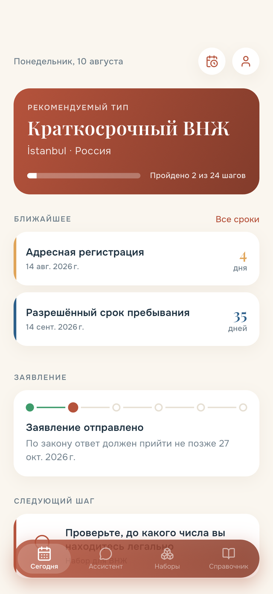
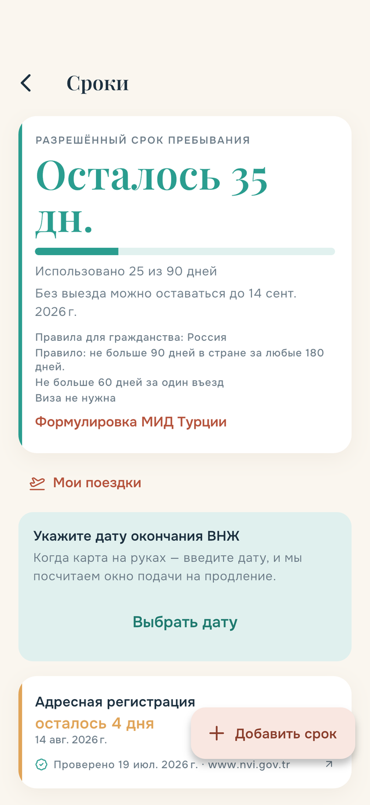
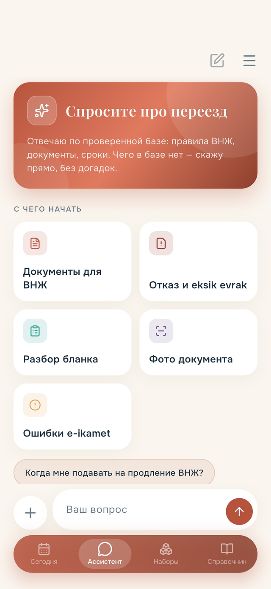
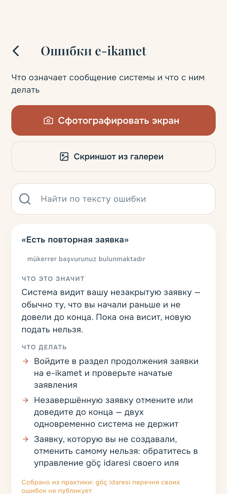
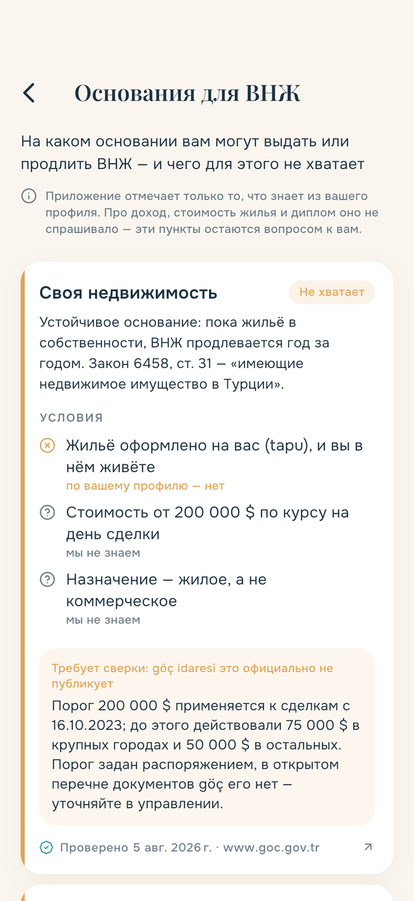
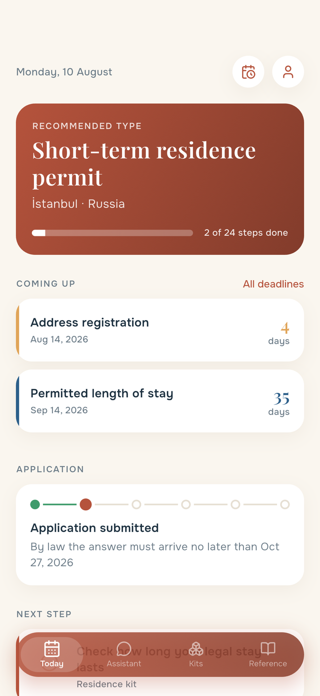
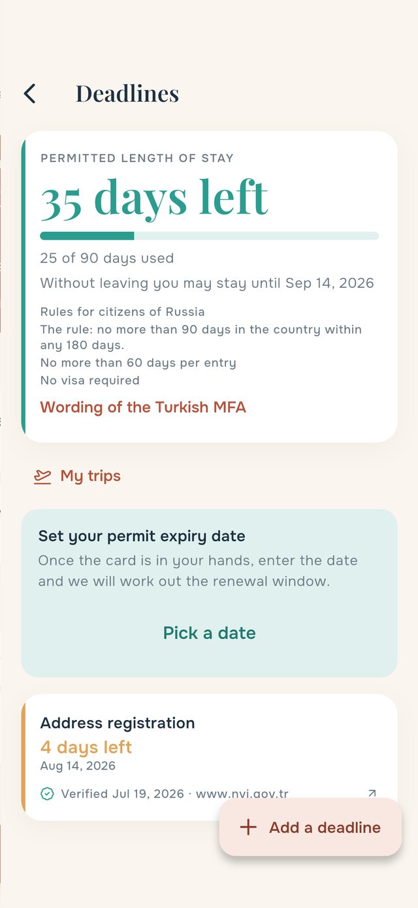
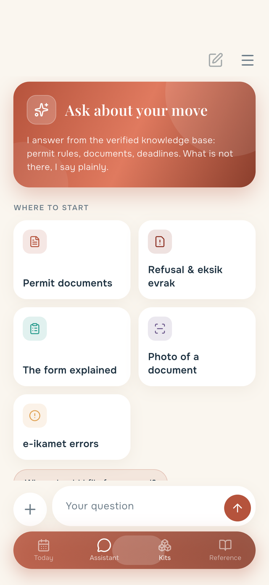
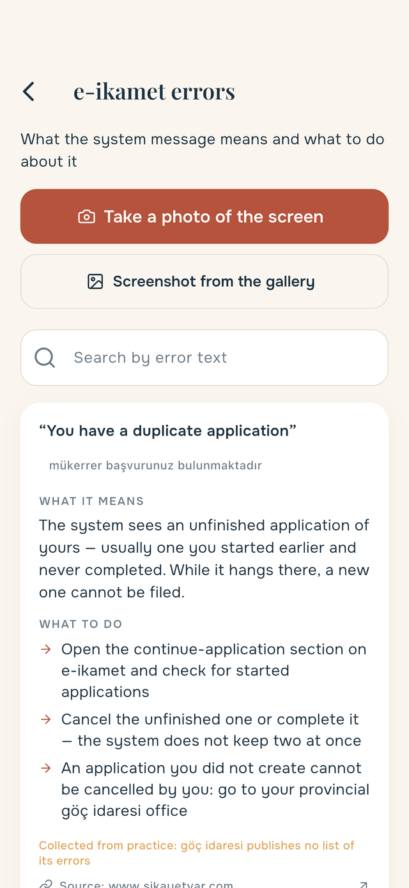
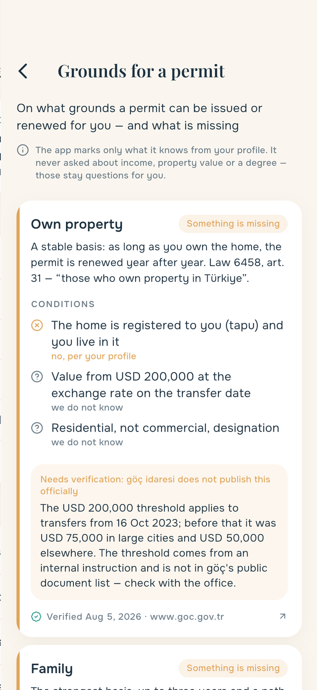

Переезд в Турцию — по порядку
Какой ВНЖ вам подходит, какие документы собрать, что нельзя просрочить и что написано в турецкой бумаге. Всё в одном приложении — и со ссылкой на официальный источник под каждым утверждением.

Что оно решает
Четыре ситуации, в которых люди теряют деньги и время чаще всего.
Сроки, которые считаются сами
Адресная регистрация — 20 рабочих дней с въезда. Окно подачи на продление открывается за 60 дней. Разрешённый срок пребывания зависит от гражданства: у россиянина 60 дней за поездку, у белоруса 30.
Приложение считает это от вашей даты въезда и показывает, сколько осталось, — вместо того чтобы вы сверялись с таблицами.

Турецкий документ — по фотографии
Письмо из göç idaresi, счёт, договор. Приложение объясняет, что это, что от вас хотят и к какому числу, а найденную дату кладёт в трекер сроков одной кнопкой.
Отдельно разбирается письмо об отказе: ret и eksik evrak — разные события, и путать их нельзя.

Что значит турецкое сообщение системы
«Mükerrer başvurunuz bulunmaktadır», «Seyahat belgesi bulunmuyor» — сфотографируйте экран, и приложение скажет, что это значит и что делать. Разбор берётся из справочника, а не сочиняется на ходу.

На чём держится ваш ВНЖ
Туристическое основание продлевают не всем. Приложение показывает все основания сразу — недвижимость, семья, учёба, работа, удалённая работа — и отмечает, что по вашему профилю уже сходится, а чего не хватает.
Чего мы не знаем — так и пишем: про доход и диплом приложение не спрашивало и делать вид, что знает, не будет.

Почему этому можно верить
Ошибка в требованиях к ВНЖ стоит человеку отказа, а иногда и запрета на въезд. Поэтому приложение устроено так, чтобы не выдумывать.
Источник под каждым утверждением
Закон, страница göç idaresi или таблица МИД — со ссылкой и датой, когда мы её сверяли.
«Не знаю» вместо выдумки
Ассистент отвечает только по проверенной базе. Нет ответа — так и говорит и отправляет в управление, показав его адрес.
Практика помечена как практика
То, что göç официально не публикует, показано с пометкой «требует сверки», а не выдано за правило.
Данные остаются у вас
Профиль и сроки живут на устройстве, фотографии документов не сохраняются нигде. Ни рекламы, ни аналитики.
Переезд разложен на наборы
Не лента статей, а пять наборов с прогрессом: видно, что сделано и что осталось.
Чего мы не делаем
Честно, чтобы не было лишних ожиданий.
Вопросы?
Напишите — отвечаем в течение двух рабочих дней. Особенно ждём письма о неточностях: они попадают в базу быстрее всего.
Поддержка и частые вопросыMoving to Türkiye, step by step
Which permit fits you, what documents to gather, what you must not miss, and what that Turkish letter actually says. All in one app — with an official source under every statement.

What it solves
The four situations where people lose money and time most often.
Deadlines that count themselves
Address registration — 20 working days from entry. The renewal window opens 60 days before expiry. The permitted stay depends on citizenship: 60 days per visit for Russians, 30 for Belarusians.
The app counts all of it from your entry date and shows what is left — instead of you cross-checking tables.

A Turkish document from a photo
A letter from göç idaresi, a bill, a contract. The app explains what it is, what is expected of you and by when — and puts the date it finds into your deadline tracker in one tap.
Refusal letters get their own screen: ret and eksik evrak are different events and must not be confused.

What that system message means
“Mükerrer başvurunuz bulunmaktadır”, “Seyahat belgesi bulunmuyor” — photograph the screen and the app tells you what it means and what to do. The explanation comes from a catalogue, not from guesswork.

What your permit rests on
Tourism grounds are not renewed for everyone. The app shows every basis at once — property, family, study, work, remote work — and marks what already fits your profile and what is missing.
What we do not know, we say: the app never asked about your income or degree and will not pretend otherwise.

Why you can trust this
A mistake about permit requirements costs a refusal, sometimes an entry ban. So the app is built not to invent.
A source under every statement
The law, a göç idaresi page or the MFA table — with a link and the date we verified it.
“I don't know” instead of invention
The assistant answers only from a verified base. No answer — it says so and sends you to the office, address included.
Practice marked as practice
What göç does not publish officially is shown as “needs verification”, not passed off as a rule.
Your data stays yours
Profile and deadlines live on the device, document photos are stored nowhere. No ads, no analytics.
Relocation split into kits
Not a feed of articles but five kits with progress: you see what is done and what is left.
What we do not do
Plainly, so there are no false expectations.
Questions?
Write to us — we reply within two business days. We especially welcome reports of inaccuracies: those reach the knowledge base fastest.
Support and FAQ